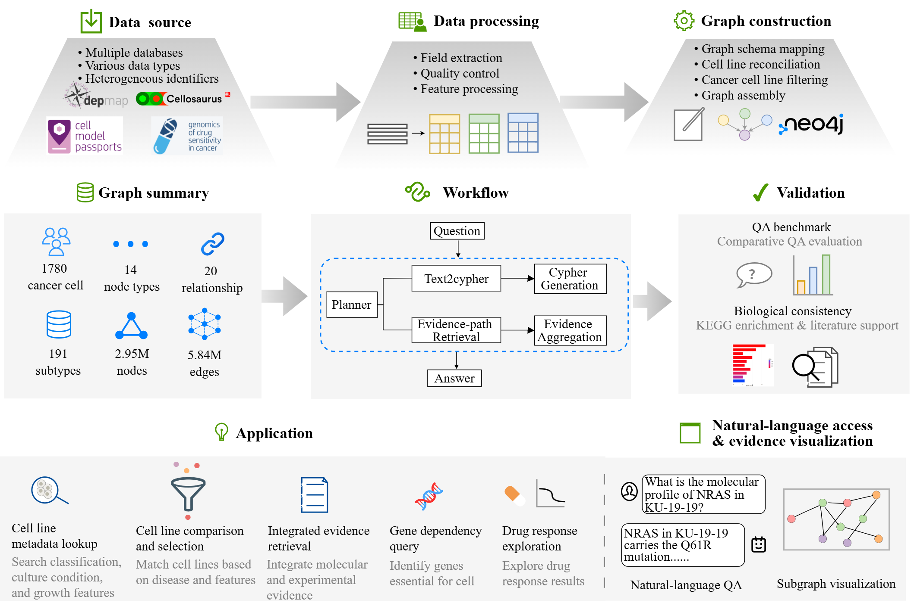
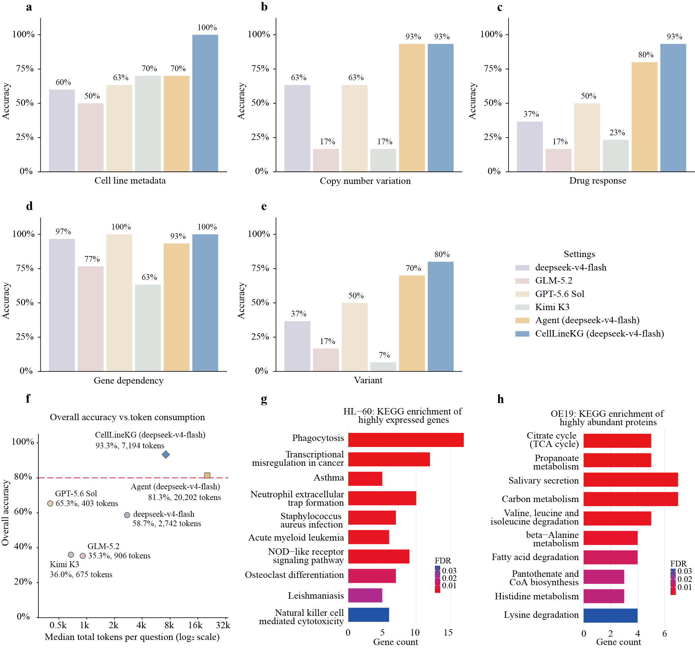
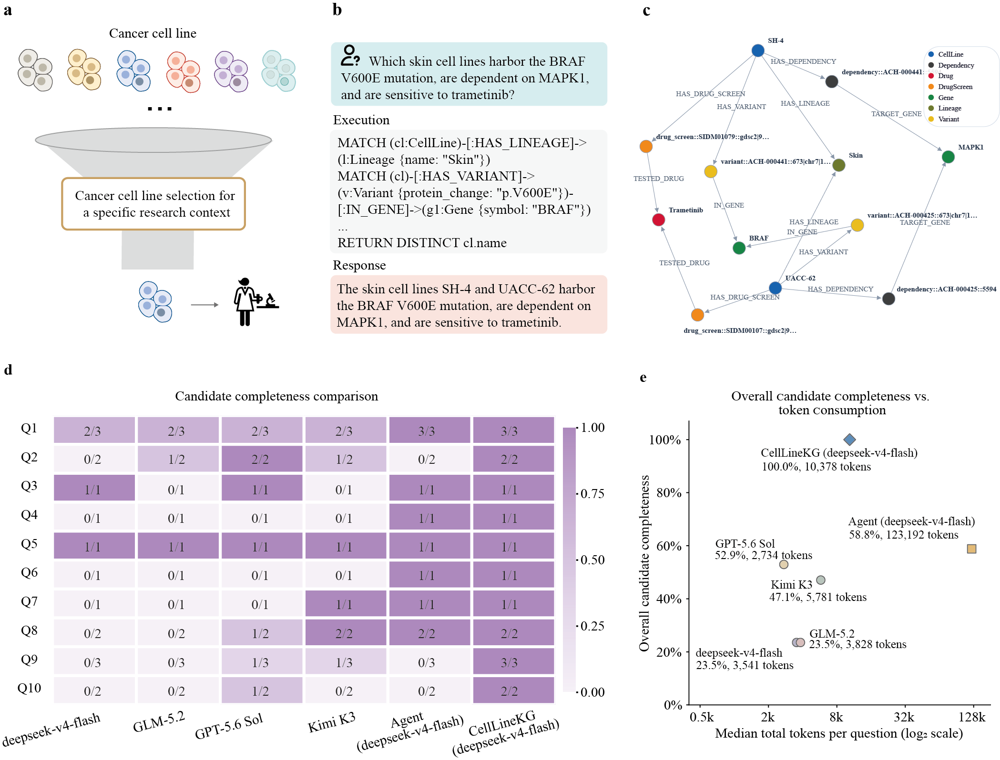
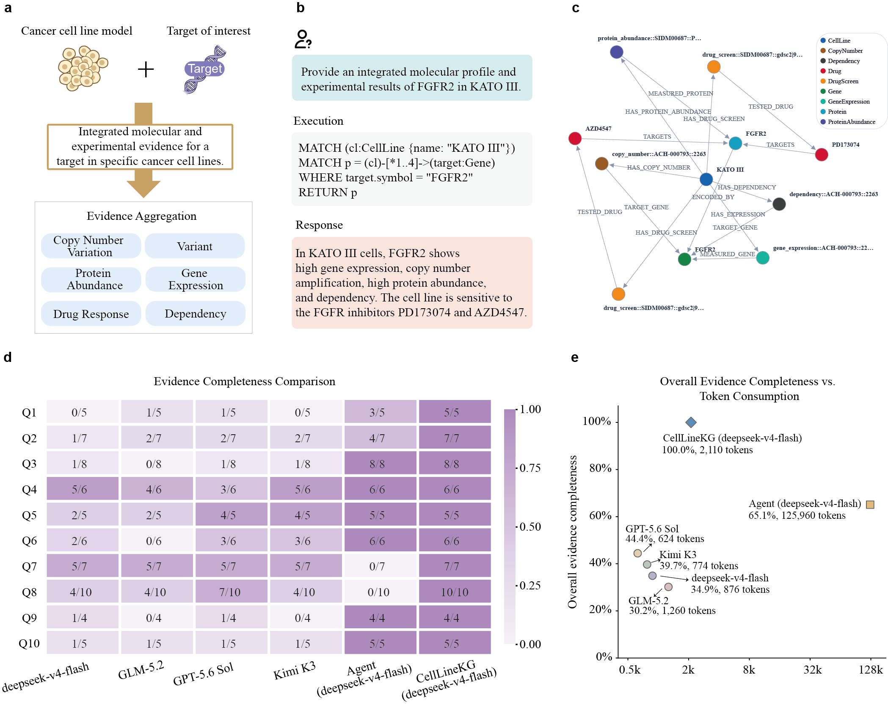

Processed graph
14 node tables and 20 relationship tables generated after preprocessing, cross-database reconciliation, feature processing, and schema mapping.
1School of Computing and Information Technology, Great Bay University, China
2Bioinformatics Center, Institute for Chemical Research, Kyoto University, Japan
3SANKEN, Osaka University, Japan
*Corresponding author
Cancer cell line selection requires integrating molecular, functional, and pharmacological evidence across databases with inconsistent identifiers and data representations. CellLineKG is a cell line-centric knowledge graph that harmonizes records from Cellosaurus, the Cancer Dependency Map (DepMap), the Genomics of Drug Sensitivity in Cancer (GDSC), and Cell Model Passports (CMP) for 1,780 human cancer cell lines spanning 29 lineages and 191 cancer subtypes. The graph comprises 14 node types, 20 relationship types, approximately 2.95 million nodes, and 5.84 million edges. Continuous measurements are converted into discrete evidence states for copy-number alterations, gene expression, protein abundance, CRISPR dependencies, and drug response. CellLineKG also provides natural-language access through Text2Cypher and evidence-path retrieval, together with benchmark datasets for validation and integrated evidence retrieval.

The released resource contains processed graph tables and benchmark datasets. The graph data are provided as CSV node and relationship tables that can be imported into Neo4j to reconstruct CellLineKG. Benchmark files are provided in XLSX format for single Q&A, multi-condition cancer cell line selection, and integrated evidence retrieval.
14 node tables and 20 relationship tables generated after preprocessing, cross-database reconciliation, feature processing, and schema mapping.
qa150.xlsx, qa_multi.xlsx, and qa_path.xlsx provide questions and reference answers for the three evaluation tasks.
Source-traceable data categories were assessed using a single-question benchmark covering cell-line metadata, variants, copy-number variation, gene dependency, and drug response. Derived gene-expression and protein-abundance states were assessed through KEGG pathway enrichment and comparison with published studies.

CellLineKG can retrieve cancer cell lines satisfying combinations of disease, molecular, functional, and pharmacological criteria.

CellLineKG can connect molecular, functional, and pharmacological evidence for a target gene within a specified cancer cell line.

Users can reproduce CellLineKG from the source datasets using the released preprocessing workflow, or directly reconstruct the graph from the processed node and relationship tables. The repository also provides the natural-language query framework and evaluation scripts used in the study.
git clone https://github.com/9264xuan/CellLineKG-release.git
cd CellLineKG-releaseThe manuscript is currently being submitted. Replace this block with the final citation after a preprint or published article becomes available.
@article{celllinekg,
title = {An Integrated Multimodal Knowledge Graph Dataset for Human Cancer Cell Lines},
author = {Wang, Xuan and Yang, Ziwei and Piao, Xihao and Chen, Zheng and Zhu, Lingwei},
note = {Manuscript submitted}
}